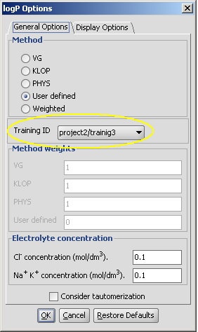

Instructions for plugin teaching
Training of the correction library for pKa calculations
If you are not satisfied with the performance of the default pKa calculator then
you can take the advantage of the supervised pKa learning method that is built
into the pKa calculator. Special structural parts may have an effect on the pKa
values calculated by the built-in method, so your correction library based on experimental data of your compound
family helps the pKa calculator to improve the prediction accuracy.
What do you need to do in order to improve the accuracy of the pKa calculation?
First, you need to see clearly which ionization center(s) was predicted
inaccurately by the pKa calculator.
You need to collect experimental data for that ionization center(s). The learning
algorithm is based on linear regression analysis, therefore you need to collect a
certain amount of experimental pKa data otherwise the regression analysis will fail.
There is no rule of thumb for what a large pool of data is required to perform a
reliable pKa teaching. If your purpose is to create a local model with the scope
only for a certain types of chemical environment of the ionization
center then it may be enough to collect a few representative structures. A more
robust model, however, requires as many as possible diverse structures and
pKa values of the ionization center in question.
The next step of the teaching process is the input of the collected data into
an sdf file. The file can be easily created by using the graphical user interface of Instant JChem.
What kind of information should be included in the sdf file?
The structure of the molecules and their experimental pKa value(s) and atomic
ID's which are assigned to the appropiate pKa value(s).
After preparing the sdf file you can run the teaching algorithm that
creates a correction library from your data. This correction library will be
used by the pKa calculation of the ionization
center in question.
Training of the pKa plugin via cxtrain
- Create a training set in sdfile (.sdf)
format from your experimental data. The file must
contain the following fields:
- structure
- pKa value 1 (field name: pKa1)
- ID of the atom which has the pKa1 value (field name: ID1)
Additional pKa values are optional (recommended for handling multiprotic compunds):
- pKa value 2 (pKa2)
- ID2
- etc.
Definition of only one pKa value is enough to apply the
training data, but more values in case of multiprotic compounds will enhance the
reliability of the pKa teaching.
In this example this file is mydata.sdf.
The picture below is a detail from the training file. ID1 is the index
of the atom with the experimental pKa1 value (ID2 would
be the index of the second measured pKa value /pKa2/, etc.).
This atom index can be viewed by checking the Atom number option in the molecule editor (menu: View->Misc).

- Generation of the knowledge base:
Execute the following command from command line:
cxtrain pka -i mypka pKa_trainingset.sdf
See detailed options here.
The created data is stored in your home directory under chemaxon\calculations\training.
- Use this knowledge base via cxcalc, Chemical Terms or Marvin. The training data helps
to calculate more accurately the pKa of the
molecules and the results are closer to the experimental values.
Usage in Marvin
| check the Use correction library box to activate the training option: |
 |
If you have created multiple training sets, choose the needed one from the dropdown list below the checkbox. |
| pKa calculation without training data |
pKa calculation with training data |

|

|
Usage with cxcalc
without correction library:
cxcalc pKa "CC1=NC2=C(N1)C(C)=NC(C)=N2"
id apKa1 apKa2 bpKa1 bpKa2 atoms
1 11.08 3.67 -2.38 6,9,3
with correction library:
$ cxcalc pKa -c "CC1=NC2=C(N1)C(C)=NC(C)=N2"
id apKa1 apKa2 bpKa1 bpKa2 atoms
1 9.90 3.67 -2.46 6,9,3
-c use the correction library
For more options see this page.
Training of the LogP plugin
You can create your own logP calculator with the supervised learning method built into the logP calculator.
What you need to do is just simply collect experimental logP data and create a sdf
file from it.
What do you need to see clearly in logP model building?
If you create a local logP model then the scope of the logP calculator will be
limited. It means that the calculated logP will only provide reasonable prediction
for a few types of structures. Practically only those types of structures will be
predicted correctly which were introduced to the training set during the teaching process.
For example, if the training set contains only certain types of hydrocarbon and
no other functional groups are present in the training set then it's not to expect
that the predicted logP of any amine-like structure will be accurate.
In other words, you need to be aware that a more robust general logP model requires a
large, diverse training set with thousands of structures.
Training of the logP plugin via cxtrain
- Create a structure file of any molecule file format from your experimental
data (easily done with Instant JChem). The file must contain the following information:
- structure
- logP values in a property field named LOGP
See this bit of an example file: 
In this example this file is trainingset.sdf.
- Execute the following command from command line:
cxtrain logp -t LOGP -i mylogp -a logP_trainingset.sdf
See detailed options here.
- Use this data via via cxcalc, Chemical Terms or Marvin.
Usage in Marvin
| choose the User defined or the Weighted method to activate the training option: |
 |
If you have created multiple training sets, choose the needed one from the dropdown list below the checkbox. |
Training of the LogP plugin in Instant JChem
The training of the LogP plugin is simplest by using the graphical interface of Instant JChem where the
logP and general property trainings are available. See the IJC documentation for details.
Predictor plugin teaching
Predictor can be applied for molecular property prediction when molecular properties can be expressed as the sum of atomic contributions.
You have to create a training file which contains the structures and the experimental values of the property you would like to create a prediction for.
Training set creation via cxtrain
The command line program cxtrain is available for logP, pKa and custom prediction training.
- Create a structure file of any molecule file format from your experimental
data (easily done with Instant JChem). The file must contain the following information:
- structure
- the experimental values in a property field (named MP in this example)
In the example below this file is my_data_mp.sdf.
- Execute the following command from command line:
cxtrain prediction -t MP -i meltingpoint my_data_mp.sdf
The data tagged MP is
- Use this data via via cxcalc, Chemical Terms or Marvin's Predictor Plugin.
cxtrain options list
Molecular Property Prediction Trainer, (C) 1998-2011 ChemAxon Ltd.
version 5.4.0
Trains molecular property predictions: pKa, logP, etc.
Usage:
cxtrain [options] [input file (training set)]
Prediction:
pka train pKa prediction
logp train logP prediction
prediction train custom prediction
General options:
cxtrain -h, --help this help message
-i, --training-id sets the training ID
-l, --list list available training ID's
-g, --ignore-error continue with next molecule on error
pKa options:
-V, --validation validation results file path
logP options:
-t, --tag name of the SDFile tag that stores the
experimental logP values
-a, --add-built-in-training-set add built-in logP training set
Custom prediction options:
-t, --tag name of the SDFile tag that stores the
experimental property values
Examples:
cxtrain pka -i mypka pKa_trainingset.sdf
cxtrain logp -t LOGP -i mylogp -a logP_trainingset.sdf
cxtrain logp --list
cxtrain prediction -t PAMPA -i mypampa pampa_trainingset.sdf
Known issues
MarvinSketch and MarvinWiew applet cannot access pKa correction library files and logP/predictor training parameter files stored on server.
Applet allows only to use trainings stored on local computer.
Predictor plugin teaching in Instant JChem
The training of the Predictor plugin is simplest by using the graphical interface of Instant JChem where the
logP and general property trainings are available. See the IJC documentation for details.
-->